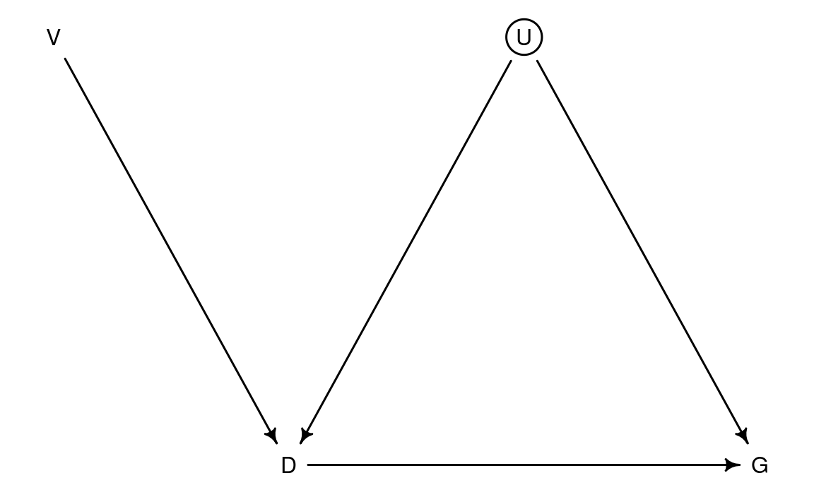
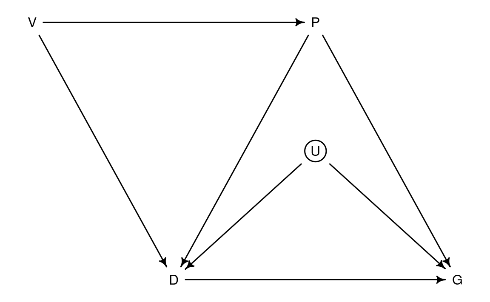
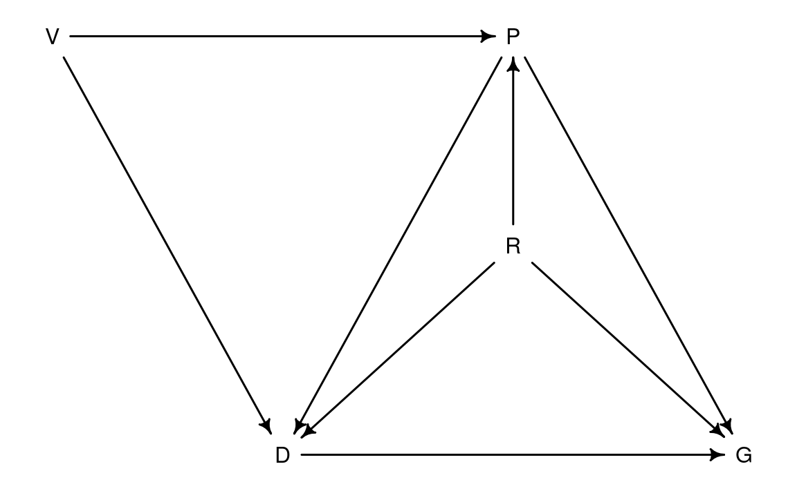

Code
library(dagitty)Mitsuo Shiota
October 8, 2022
June 14, 2023
I briefly read the article, “Curse of Democracy: Evidence from the 21st Century”, by Yusuke Narita and Ayumi Sudo, September 28, 2021, which claims direct effect from democracy to economic growth was positive in the 1980s and 1990s, but was negative in the 2000s and 2010s. To claim this relationship is not just association but causal, the authors use instrumental variables, which are (1) mortality of European colonial settlers, (2) population density in the 1500s, (3) availability of crops and minerals, (4) fraction of the population speaking English and a Western European language and (5) legal origin.
As I happen to be reading “Statistical Rethinking, 2nd Edition” by Richard McElreath, CRC Press, 2020, I would like to show instrumental variable strategy in the DAG (Directed Acyclic Graph) as below.

V: Instrumental variable
D: Democracy index
G: GDP growth rate
U: Unobserved confound on D and G
This strategy aims to estimate the direct effect from D to G. It requires the only path from V to G is V -> D -> G.
The authors do 2 stage least square regression on cross-country data, and find their claim.
However, if I add Per capita GDP as P to the DAG, it looks like below.

Here, the requirement is broken, as there are paths like V -> P -> G.
V -> P: The instrumental variables the authors use suggest higher per capita GDP.
P -> D: Higher per capita GDP leads to democracy, or democracy is luxury.
P -> G: Already high per capita GDP leads to lower productivity growth due to fewer low hanging fruits of growth, and leads to lower population growth due to higher opportunity cost of raising children.
The authors may have expected this criticism, so they condition on P, and find little changes, and tell their claim is robust.
Indeed, conditioning on P shuts the paths from V to G through P, so V cannot influence G except through D.
However, if I replace U with resource-richness as R to the DAG, it looks like below.

R -> P: Resource-rich countries tend to have higher per capita GDP.
R -> D: Resource-rich countries tend to have concentration of power, as lower competitiveness of manufacturing sector due to higher exchange rate fails to create middle income class, and/or small number of people who hold resources try to monopolize politics.
R -> G: Resource-rich countries can grow rapidly by depleting resources, when resource prices are high.
Here, conditioning P makes P a collider, and opens the path like V -> P <- R -> G.
So I suspect the estimates the authors get by conditioning on P (Per capita GDP) are not the direct effect from D to G, but reflect the resource price movements, which were lower in 1980s and 1990s, and higher in 2000s and 2010s.
---
title: Does democracy cause slower economic growth in the 21st century?
author: Mitsuo Shiota
date: '2022-10-08'
date-modified: '2023-06-14'
categories:
- economics
- R
knitr:
opts_chunk:
out.width: '70%'
---
```{r}
#| label: setup
#| message: false
library(dagitty)
```
## Curse of democracy?
I briefly read the article, ["Curse of Democracy: Evidence from the 21st Century", by Yusuke Narita and Ayumi Sudo, September 28, 2021](https://arxiv.org/abs/2104.07617), which claims direct effect from democracy to economic growth was positive in the 1980s and 1990s, but was negative in the 2000s and 2010s. To claim this relationship is not just association but causal, the authors use instrumental variables, which are (1) mortality of European colonial settlers, (2) population density in the 1500s, (3) availability of crops and minerals, (4) fraction of the population speaking English and a Western European language and (5) legal origin.
As I happen to be reading ["Statistical Rethinking, 2nd Edition" by Richard McElreath, CRC Press, 2020](https://xcelab.net/rm/statistical-rethinking/), I would like to show instrumental variable strategy in the DAG (Directed Acyclic Graph) as below.
```{r}
#| label: fig-dag1
#| fig-cap: No path from V to G except via D
#| fig-align: center
dag_intended <- dagitty("dag{
U [unobserved]
D <- U -> G
V -> D
D -> G
}")
coordinates(dag_intended) <- list(x = c(V = 0, D = 1, U = 2, G = 3),
y = c(V = 0, D = 1, U = 0, G = 1))
rethinking::drawdag(dag_intended)
```
V: Instrumental variable
D: Democracy index
G: GDP growth rate
U: Unobserved confound on D and G
This strategy aims to estimate the direct effect from D to G. It requires the only path from V to G is V -> D -> G.
The authors do 2 stage least square regression on cross-country data, and find their claim.
## GDP per capita as a confound
However, if I add Per capita GDP as P to the DAG, it looks like below.
```{r}
#| label: fig-dag2
#| fig-cap: There is a path from V to G other than via D
#| fig-align: center
dag_ctrl <- dagitty("dag{
U [unobserved]
D <- U -> G
V -> D
D -> G
D <- P -> G
V -> P
}")
coordinates(dag_ctrl) <- list(x = c(V = 0, D = 1, U = 2, G = 3, P = 2),
y = c(V = 0, D = 1, U = 0.5, G = 1, P = 0))
rethinking::drawdag(dag_ctrl)
```
Here, the requirement is broken, as there are paths like V -> P -> G.
V -> P: The instrumental variables the authors use suggest higher per capita GDP.
P -> D: Higher per capita GDP leads to democracy, or democracy is luxury.
P -> G: Already high per capita GDP leads to lower productivity growth due to fewer low hanging fruits of growth, and leads to lower population growth due to higher opportunity cost of raising children.
The authors may have expected this criticism, so they condition on P, and find little changes, and tell their claim is robust.
Indeed, conditioning on P shuts the paths from V to G through P, so V cannot influence G except through D.
## Resource (e.g. oil and gas) richness as a confound
However, if I replace U with resource-richness as R to the DAG, it looks like below.
```{r}
#| label: fig-dag3
#| fig-cap: There is a path from V to G via P and R
#| fig-align: center
dag_r <- dagitty("dag{
D <- R -> G
V -> D
D -> G
D <- P -> G
V -> P <- R
}")
coordinates(dag_r) <- list(x = c(V = 0, D = 1, R = 2, G = 3, P = 2),
y = c(V = 0, D = 1, R = 0.5, G = 1, P = 0))
rethinking::drawdag(dag_r)
```
R -> P: Resource-rich countries tend to have higher per capita GDP.
R -> D: Resource-rich countries tend to have concentration of power, as lower competitiveness of manufacturing sector due to higher exchange rate fails to create middle income class, and/or small number of people who hold resources try to monopolize politics.
R -> G: Resource-rich countries can grow rapidly by depleting resources, when resource prices are high.
Here, conditioning P makes P a collider, and opens the path like V -> P <- R -> G.
So I suspect the estimates the authors get by conditioning on P (Per capita GDP) are not the direct effect from D to G, but reflect the resource price movements, which were lower in 1980s and 1990s, and higher in 2000s and 2010s.